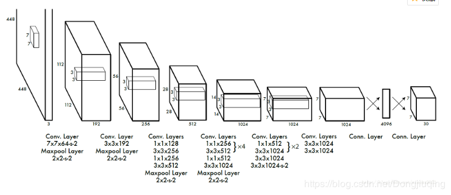
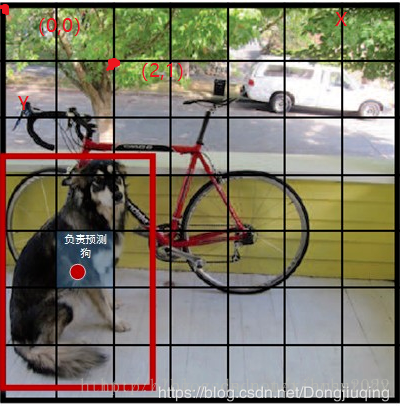

2020 7 3
今天来学习一下Yolo5, 并做如下笔记
in html
1. Yolo简介
Yolo, you only look once的简称, 我想作者是想借这个名字表达"这个网络识别速度很快, 看一眼的时间就足够他识别"(纯属瞎扯)
实际上Yolo也是一个卷积神经网络,如下图:(图片来源于网络)

不同与minst网络, Yolo最后输出一个张量(n*n*m)表示图片中各个物体的大小,种类,位置 这些关系,而不是想minst输出一个向量(1*n)
表示图中出现物体的种类, 所以yolo无论是网络大小,还是功能,都远多于minst.
重点说一下最终的张量(n*n*m):
n*n: 许多网站上将它解释为,将输入图片分割为你n*n个小区域, 这话不错却也造成了许多误解; ①输入Yolo时并不需要将图像分割, 由N*N*3的图片
直接卷积得到(n*n*m);②n*n中每一格代表原图中的一块区域, 看看上图CNN的原理就会懂, 卷积过程中张量的长宽不断减小, 从最后一层倒着看像第一层,
就会发现, 最后一层的一格,代表第一层一个区域,当然,这一区域没有特别明显的界限.
m=(类个数+5)*3: ①首先该网络需要完成分类, 目前大部分分类都采用类似方法: 分n个类,则输出n个数,表示该物体是:第一类的概率,第二类的概率.....第n类的概率
哪一个概率最大我们便认为该物体属于这一类,因此始终有"类个数"; ② +5表示框, 如下图, Yolo的结果是输出一堆框, 每个框都必须由四个变量表示,
在此Yolo选择了x,y,w,h这四个变量,第五个变量表示置信读,待会再说; ③*3, 每个小区域内可能存在多个目标物体,因此一个小区域内预测三个框,但
从结果可以看出, 并不是每一个区域内都有三个框, 这就是置信度的作用, 表示该框准确框到物体的概率, 借此筛掉多余的框.
其实并没有筛完, 所以Yolo后常跟随NMS(非极大值抑制). 至于如何通过卷积得到最后这个张量(n*n*m), 不同的版本有不同的卷积方式, 在此不做赘述
